在上一篇文章中，我和你介绍了间隙锁和 next-key lock 的概念，但是并没有说明加锁规则。间隙锁的概念理解起来确实有点儿难，尤其在配合上行锁以后，很容易在判断是否会出现锁等待的问题上犯错。
所以今天，我们就先从这个加锁规则开始吧。
首先说明一下，这些加锁规则我没在别的地方看到过有类似的总结，以前我自己判断的时候都是想着代码里面的实现来脑补的。这次为了总结成不看代码的同学也能理解的规则，是我又重新刷了代码临时总结出来的。所以，这个规则有以下两条前提说明：
- MySQL 后面的版本可能会改变加锁策略，所以这个规则只限于截止到现在的最新版本，即 5.x 系列 <=5.7.24，8.0 系列 <=8.0.13。
- 如果大家在验证中有发现 bad case 的话，请提出来，我会再补充进这篇文章，使得一起学习本专栏的所有同学都能受益。
因为间隙锁在可重复读隔离级别下才有效，所以本篇文章接下来的描述，若没有特殊说明，默认是可重复读隔离级别。 我总结的加锁规则里面，包含了两个“原则”、两个“优化”和一个“bug”。
- 原则 1：加锁的基本单位是 next-key lock。希望你还记得，next-key lock 是前开后闭区间。
- 原则 2：查找过程中访问到的对象才会加锁。
- 优化 1：索引上的等值查询，给唯一索引加锁的时候，next-key lock 退化为行锁。
- 优化 2：索引上的等值查询，向右遍历时且最后一个值不满足等值条件的时候，next-key lock 退化为间隙锁。
- 一个 bug：唯一索引上的范围查询会访问到不满足条件的第一个值为止。 我还是以上篇文章的表 t 为例，和你解释一下这些规则。表 t 的建表语句和初始化语句如下。
CREATE TABLE `t` (
`id` int(11) NOT NULL,
`c` int(11) DEFAULT NULL,
`d` int(11) DEFAULT NULL,
PRIMARY KEY (`id`),
KEY `c` (`c`)
) ENGINE=InnoDB;
insert into t values(0,0,0),(5,5,5),(10,10,10),(15,15,15),(20,20,20),(25,25,25);
接下来的例子基本都是配合着图片说明的，所以我建议你可以对照着文稿看，有些例子可能会“毁三观”，也建议你读完文章后亲手实践一下。
### 案例一：等值查询间隙锁
第一个例子是关于等值条件操作间隙：
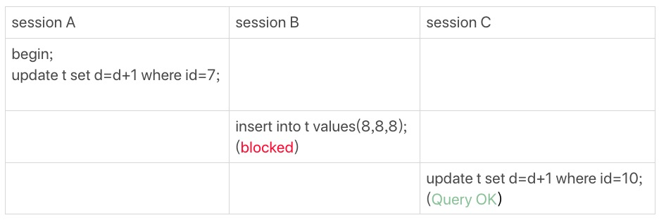
由于表 t 中没有 id=7 的记录，所以用我们上面提到的加锁规则判断一下的话： 根据原则 1，加锁单位是 next-key lock，session A 加锁范围就是 (5,10]； 同时根据优化 2，这是一个等值查询 (id=7)，而 id=10 不满足查询条件，next-key lock 退化成间隙锁，因此最终加锁的范围是 (5,10)。 所以，session B 要往这个间隙里面插入 id=8 的记录会被锁住，但是 session C 修改 id=10 这行是可以的。
### 案例二：非唯一索引等值锁
第二个例子是关于覆盖索引上的锁：
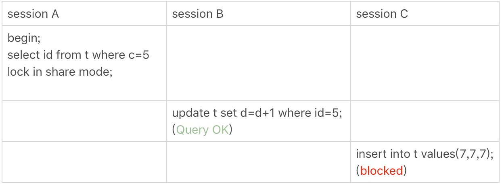
看到这个例子，你是不是有一种“该锁的不锁，不该锁的乱锁”的感觉？我们来分析一下吧。
这里 session A 要给索引 c 上 c=5 的这一行加上读锁。
根据原则 1，加锁单位是 next-key lock，因此会给 (0,5] 加上 next-key lock。
要注意 c 是普通索引，因此仅访问 c=5 这一条记录是不能马上停下来的，需要向右遍历，查到 c=10 才放弃。根据原则 2，访问到的都要加锁，因此要给 (5,10] 加 next-key lock。
但是同时这个符合优化 2：等值判断，向右遍历，最后一个值不满足 c=5 这个等值条件，因此退化成间隙锁 (5,10)。
根据原则 2 ，只有访问到的对象才会加锁，这个查询使用覆盖索引，并不需要访问主键索引，所以主键索引上没有加任何锁，这就是为什么 session B 的 update 语句可以执行完成。
但 session C 要插入一个 (7,7,7) 的记录，就会被 session A 的间隙锁 (5,10) 锁住。
需要注意，在这个例子中，lock in share mode 只锁覆盖索引，但是如果是 for update 就不一样了。 执行 for update 时，系统会认为你接下来要更新数据，因此会顺便给主键索引上满足条件的行加上行锁。
这个例子说明，锁是加在索引上的；同时，它给我们的指导是，如果你要用 lock in share mode 来给行加读锁避免数据被更新的话，就必须得绕过覆盖索引的优化，在查询字段中加入索引中不存在的字段。比如，将 session A 的查询语句改成 select d from t where c=5 lock in share mode。你可以自己验证一下效果。
### 案例三：主键索引范围锁
第三个例子是关于范围查询的 举例之前，你可以先思考一下这个问题：对于我们这个表 t，下面这两条查询语句，加锁范围相同吗？
mysql> select * from t where id=10 for update;
mysql> select * from t where id>=10 and id<11 for update;
你可能会想，id 定义为 int 类型，这两个语句就是等价的吧？其实，它们并不完全等价。 在逻辑上，这两条查语句肯定是等价的，但是它们的加锁规则不太一样。现在，我们就让 session A 执行第二个查询语句，来看看加锁效果。
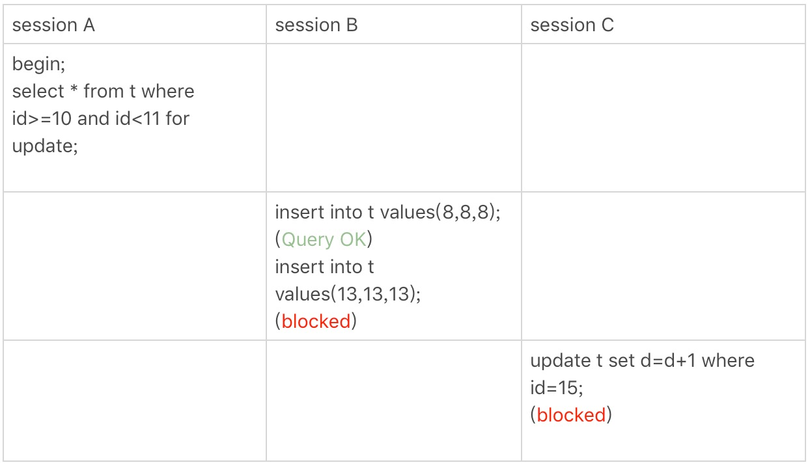
现在我们就用前面提到的加锁规则，来分析一下 session A 会加什么锁呢？ 开始执行的时候，要找到第一个 id=10 的行，因此本该是 next-key lock(5,10]。 根据优化 1， 主键 id 上的等值条件，退化成行锁，只加了 id=10 这一行的行锁。 范围查找就往后继续找，找到 id=15 这一行停下来，因此需要加 next-key lock(10,15]。 所以，session A 这时候锁的范围就是主键索引上，行锁 id=10 和 next-key lock(10,15]。这样，session B 和 session C 的结果你就能理解了。 这里你需要注意一点，首次 session A 定位查找 id=10 的行的时候，是当做等值查询来判断的，而向右扫描到 id=15 的时候，用的是范围查询判断。
### 案例四：非唯一索引范围锁
接下来，我们再看两个范围查询加锁的例子，你可以对照着案例三来看。 需要注意的是，与案例三不同的是，案例四中查询语句的 where 部分用的是字段 c。
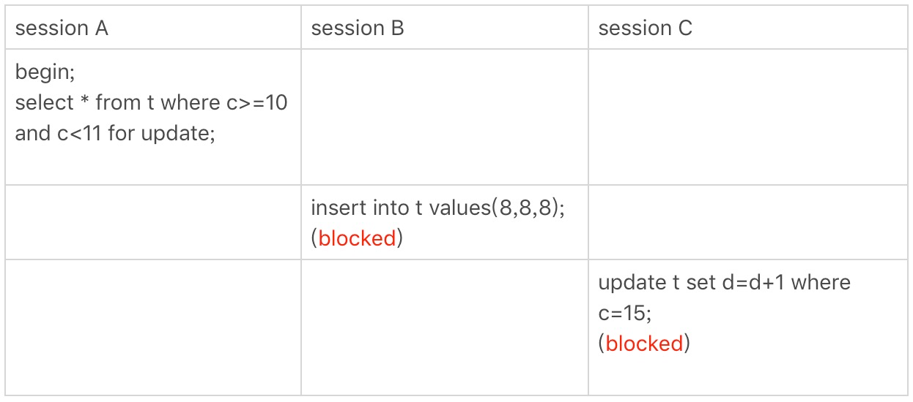
这次 session A 用字段 c 来判断，加锁规则跟案例三唯一的不同是：在第一次用 c=10 定位记录的时候，索引 c 上加了 (5,10] 这个 next-key lock 后，由于索引 c 是非唯一索引，没有优化规则，也就是说不会蜕变为行锁，因此最终 sesion A 加的锁是，索引 c 上的 (5,10] 和 (10,15] 这两个 next-key lock。 所以从结果上来看，sesson B 要插入（8,8,8) 的这个 insert 语句时就被堵住了。 这里需要扫描到 c=15 才停止扫描，是合理的，因为 InnoDB 要扫到 c=15，才知道不需要继续往后找了。
### 案例五：唯一索引范围锁 bug
前面的四个案例，我们已经用到了加锁规则中的两个原则和两个优化，接下来再看一个关于加锁规则中 bug 的案例。
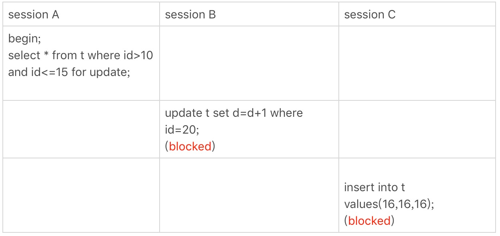
session A 是一个范围查询，按照原则 1 的话，应该是索引 id 上只加 (10,15] 这个 next-key lock，并且因为 id 是唯一键，所以循环判断到 id=15 这一行就应该停止了。 但是实现上，InnoDB 会往前扫描到第一个不满足条件的行为止，也就是 id=20。而且由于这是个范围扫描，因此索引 id 上的 (15,20] 这个 next-key lock 也会被锁上。 所以你看到了，session B 要更新 id=20 这一行，是会被锁住的。同样地，session C 要插入 id=16 的一行，也会被锁住。 照理说，这里锁住 id=20 这一行的行为，其实是没有必要的。因为扫描到 id=15，就可以确定不用往后再找了。但实现上还是这么做了，因此我认为这是个 bug。 我也曾找社区的专家讨论过，官方 bug 系统上也有提到，但是并未被 verified。所以，认为这是 bug 这个事儿，也只能算我的一家之言，如果你有其他见解的话，也欢迎你提出来。
### 案例六：非唯一索引上存在"等值"的例子
接下来的例子，是为了更好地说明“间隙”这个概念。这里，我给表 t 插入一条新记录。 mysql> insert into t values(30,10,30); 新插入的这一行 c=10，也就是说现在表里有两个 c=10 的行。那么，这时候索引 c 上的间隙是什么状态了呢？你要知道，由于非唯一索引上包含主键的值，所以是不可能存在“相同”的两行的。
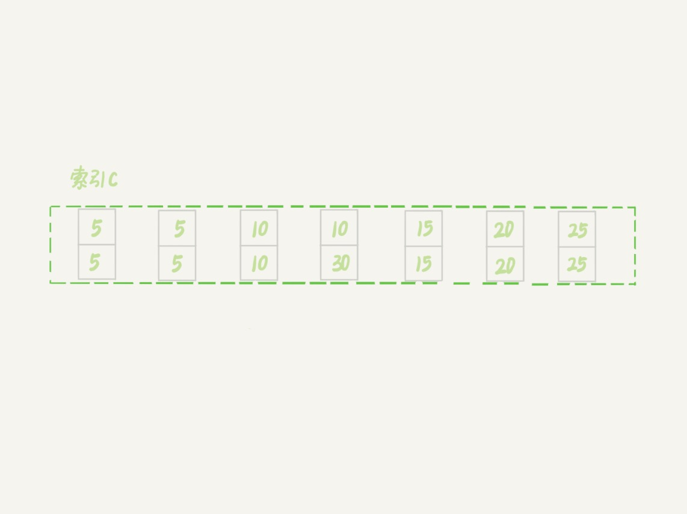
可以看到，虽然有两个 c=10，但是它们的主键值 id 是不同的（分别是 10 和 30），因此这两个 c=10 的记录之间，也是有间隙的。 图中我画出了索引 c 上的主键 id。为了跟间隙锁的开区间形式进行区别，我用 (c=10,id=30) 这样的形式，来表示索引上的一行。 现在，我们来看一下案例六。 这次我们用 delete 语句来验证。注意，delete 语句加锁的逻辑，其实跟 select … for update 是类似的，也就是我在文章开始总结的两个“原则”、两个“优化”和一个“bug”。
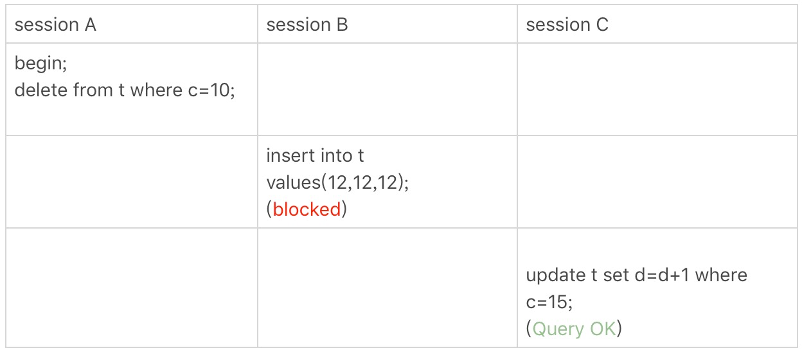
这时，session A 在遍历的时候，先访问第一个 c=10 的记录。同样地，根据原则 1，这里加的是 (c=5,id=5) 到 (c=10,id=10) 这个 next-key lock。 然后，session A 向右查找，直到碰到 (c=15,id=15) 这一行，循环才结束。根据优化 2，这是一个等值查询，向右查找到了不满足条件的行，所以会退化成 (c=10,id=10) 到 (c=15,id=15) 的间隙锁。 也就是说，这个 delete 语句在索引 c 上的加锁范围，就是下图中蓝色区域覆盖的部分。
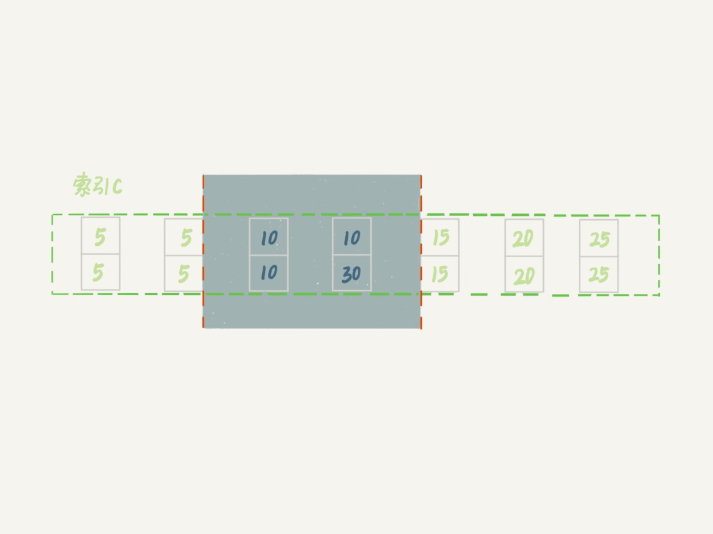
这个蓝色区域左右两边都是虚线，表示开区间，即 (c=5,id=5) 和 (c=15,id=15) 这两行上都没有锁。 案例七：limit 语句加锁 例子 6 也有一个对照案例，场景如下所示：
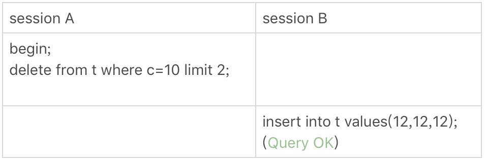
这个例子里，session A 的 delete 语句加了 limit 2。你知道表 t 里 c=10 的记录其实只有两条，因此加不加 limit 2，删除的效果都是一样的，但是加锁的效果却不同。可以看到，session B 的 insert 语句执行通过了，跟案例六的结果不同。 这是因为，案例七里的 delete 语句明确加了 limit 2 的限制，因此在遍历到 (c=10, id=30) 这一行之后，满足条件的语句已经有两条，循环就结束了。 因此，索引 c 上的加锁范围就变成了从（c=5,id=5) 到（c=10,id=30) 这个前开后闭区间，如下图所示： 图 10 带 limit 2 的加锁效果 可以看到，(c=10,id=30）之后的这个间隙并没有在加锁范围里，因此 insert 语句插入 c=12 是可以执行成功的。 这个例子对我们实践的指导意义就是，在删除数据的时候尽量加 limit。这样不仅可以控制删除数据的条数，让操作更安全，还可以减小加锁的范围。
### 案例八：一个死锁的例子
前面的例子中，我们在分析的时候，是按照 next-key lock 的逻辑来分析的，因为这样分析比较方便。最后我们再看一个案例，目的是说明：next-key lock 实际上是间隙锁和行锁加起来的结果。 你一定会疑惑，这个概念不是一开始就说了吗？不要着急，我们先来看下面这个例子：
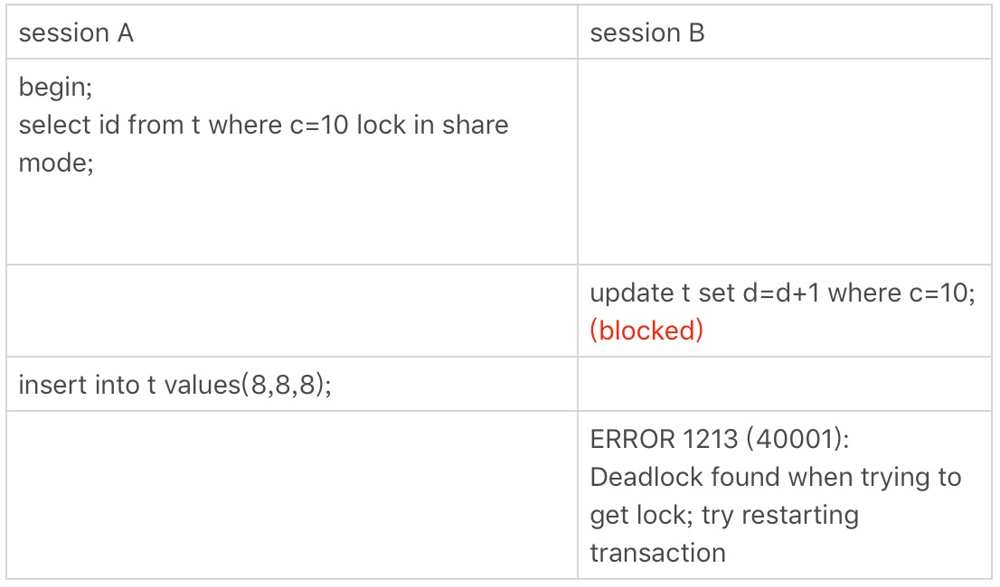
现在，我们按时间顺序来分析一下为什么是这样的结果。 session A 启动事务后执行查询语句加 lock in share mode，在索引 c 上加了 next-key lock(5,10] 和间隙锁 (10,15)； session B 的 update 语句也要在索引 c 上加 next-key lock(5,10] ，进入锁等待； 然后 session A 要再插入 (8,8,8) 这一行，被 session B 的间隙锁锁住。由于出现了死锁，InnoDB 让 session B 回滚。 你可能会问，session B 的 next-key lock 不是还没申请成功吗？ 其实是这样的，session B 的“加 next-key lock(5,10] ”操作，实际上分成了两步，先是加 (5,10) 的间隙锁，加锁成功；然后加 c=10 的行锁，这时候才被锁住的。 也就是说，我们在分析加锁规则的时候可以用 next-key lock 来分析。但是要知道，具体执行的时候，是要分成间隙锁和行锁两段来执行的。
### 小结
这里我再次说明一下，我们上面的所有案例都是在可重复读隔离级别 (repeatable-read) 下验证的。同时，可重复读隔离级别遵守两阶段锁协议，所有加锁的资源，都是在事务提交或者回滚的时候才释放的。 在最后的案例中，你可以清楚地知道 next-key lock 实际上是由间隙锁加行锁实现的。如果切换到读提交隔离级别 (read-committed) 的话，就好理解了，过程中去掉间隙锁的部分，也就是只剩下行锁的部分。 其实读提交隔离级别在外键场景下还是有间隙锁，相对比较复杂，我们今天先不展开。 另外，在读提交隔离级别下还有一个优化，即：语句执行过程中加上的行锁，在语句执行完成后，就要把“不满足条件的行”上的行锁直接释放了，不需要等到事务提交。 也就是说，读提交隔离级别下，锁的范围更小，锁的时间更短，这也是不少业务都默认使用读提交隔离级别的原因。 不过，我希望你学过今天的课程以后，可以对 next-key lock 的概念有更清晰的认识，并且会用加锁规则去判断语句的加锁范围。 在业务需要使用可重复读隔离级别的时候，能够更细致地设计操作数据库的语句，解决幻读问题的同时，最大限度地提升系统并行处理事务的能力。 经过这篇文章的介绍，你再看一下上一篇文章最后的思考题，再来尝试分析一次。 我把题目重新描述和简化一下：还是我们在文章开头初始化的表 t，里面有 6 条记录，图 12 的语句序列中，为什么 session B 的 insert 操作，会被锁住呢？
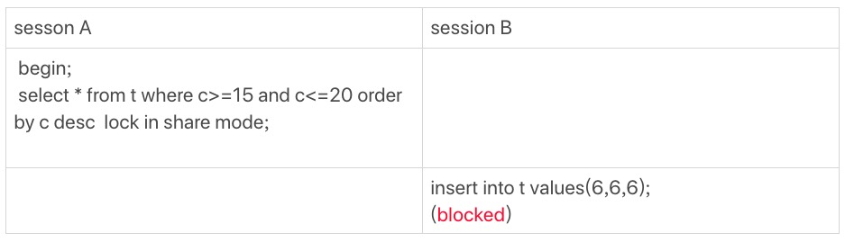
另外，如果你有兴趣多做一些实验的话，可以设计好语句序列，在执行之前先自己分析一下，然后实际地验证结果是否跟你的分析一致。 加锁规则来分析一下，看看 session A 的 select 语句加了哪些锁：
- 由于是 order by c desc，第一个要定位的是索引 c 上“最右边的”c=20 的行，所以会加上间隙锁 (20,25) 和 next-key lock (15,20]。
- 在索引 c 上向左遍历，要扫描到 c=10 才停下来，所以 next-key lock 会加到 (5,10]，这正是阻塞 session B 的 insert 语句的原因。
- 在扫描过程中，c=20、c=15、c=10 这三行都存在值，由于是 select *，所以会在主键 id 上加三个行锁。 因此，session A 的 select 语句锁的范围就是：
- 索引 c 上 (5, 25)；
- 主键索引上 id=10、15、20 三个行锁。 这里，我再啰嗦下，你会发现我在文章中，每次加锁都会说明是加在“哪个索引上”的。因为，锁就是加在索引上的，这是 InnoDB 的一个基础设定，需要你在分析问题的时候要一直记得。
评论区留言点赞板：
@Justin 同学提了个好问题，<= 到底是间隙锁还是行锁？其实，这个问题，你要跟“执行过程”配合起来分析。在 InnoDB 要去找“第一个值”的时候，是按照等值去找的，用的是等值判断的规则；找到第一个值以后，要在索引内找“下一个值”，对应于我们规则中说的范围查找。 @信信 提了一个不错的问题，要知道最终的加锁是根据实际执行情况来的。所以，如果一个 select * from … for update 语句，优化器决定使用全表扫描，那么就会把主键索引上 next-key lock 全加上。 @nero 同学的问题，提示我需要提醒大家注意，“有行”才会加行锁。如果查询条件没有命中行，那就加 next-key lock。当然，等值判断的时候，需要加上优化 2（即：索引上的等值查询，向右遍历时且最后一个值不满足等值条件的时候，next-key lock 退化为间隙锁。）。 @小李子、@发条橙子同学，都提了很好的问题，这期高质量评论很多，你也都可以去看看。 最后，我要为元旦期间还坚持学习的同学们，点个赞 ^_^